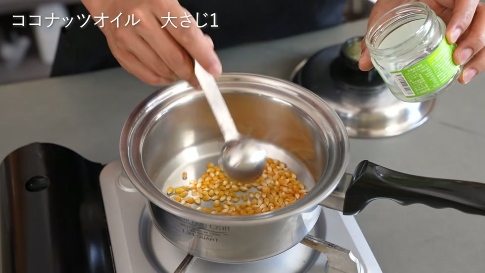
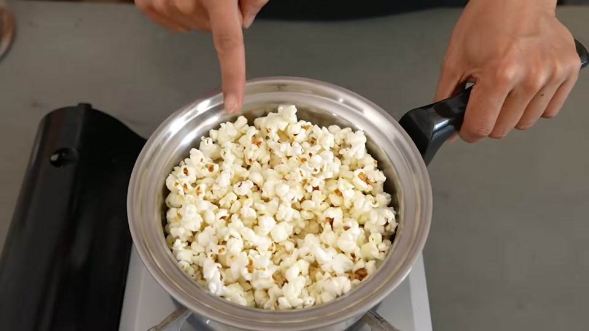
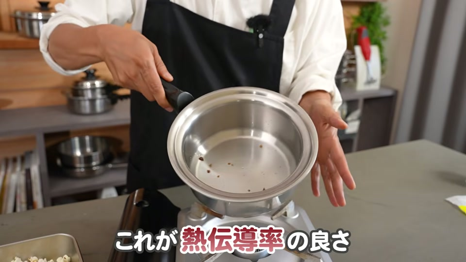
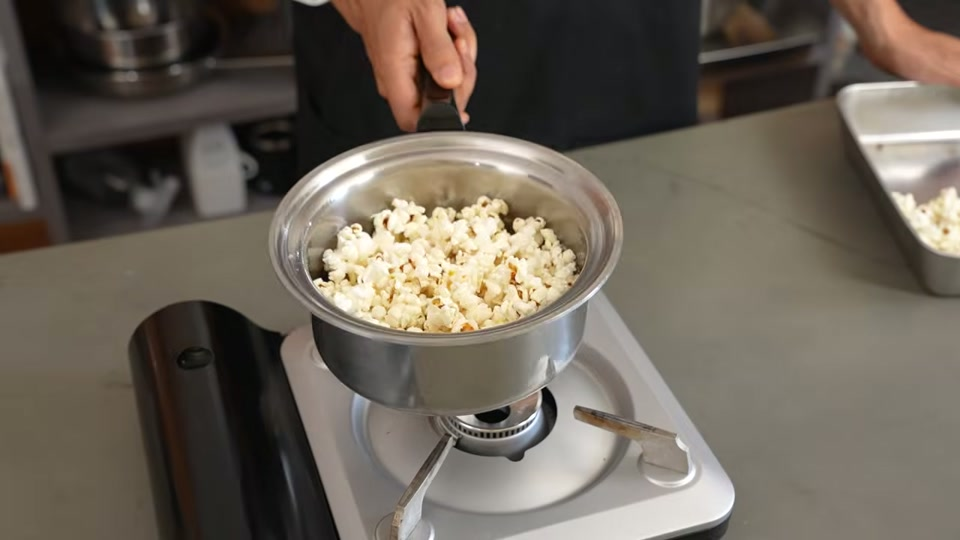
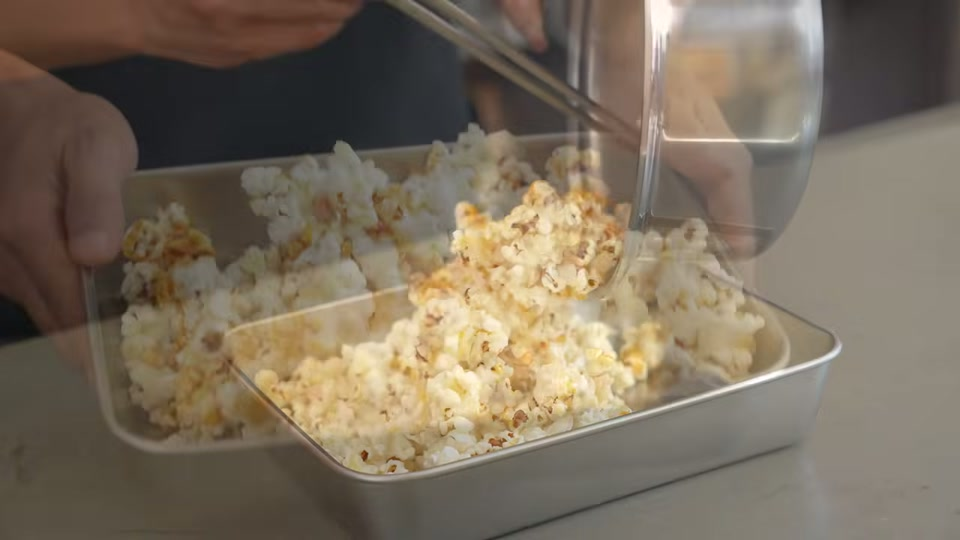

家庭でポップコーンを作るとき、「ずっと鍋を振り続けないと焦げてしまう」「市販のキャラメルポップコーンは添加物や油分が気になる」と悩んだことはありませんか？
結論からお伝えすると、高い熱伝導性を持つステンレス多層鍋を使用すれば、鍋を一切振らずに中火で放置するだけで、焦がさずに美味しいポップコーンを作ることができます。
本記事では、酸化に強いココナッツオイルと白砂糖を使って作る、安全・安心でヘルシーな「手作りキャラメルポップコーン」のレシピと調理のポイントを詳しく紹介します。
ステンレス多層鍋でポップコーンを作るメリット
一般的なフライパンや薄手のアルミ鍋でポップコーンを作ると、熱が一部に集中してしまい、カシャカシャと常に振り続けないと底が焦げ付いてしまいます。
しかし、ステンレス多層鍋を使用すればその苦労は不要です。
- 鍋を振る手間がゼロ：全体に均一に熱が伝わる構造のため、中火にかけておくだけで豆が均等に弾けます。
- 油分控えめでベタつかない：市販品や専用マシンで作る場合に比べ、使う油の量は約1/3。食べた後に手を拭く手間が少なく、ベタつきません。
- 圧倒的なコストパフォーマンス：テーマパークや市販のキャラクター品を買うと数百円ほどかかりますが、手作りなら1回あたり約20〜30円と非常にお得です。
材料と事前準備

作る前に以下の材料を用意しましょう。1.75コート程度のステンレス多層鍋（または1コート）を使用するのが適しています。
| 材料 | 分量 | 備考 |
|---|---|---|
| ドライポップコーン（豆） | 鍋底一面に重ならない程度 | 少量でたくさん弾けます |
| ココナッツオイル | 大さじ1 | 熱や酸化に強くヘルシー |
| 白砂糖 | 1/2カップ | 飴作りに最適 |
※ココナッツオイルは熱に強く酸化しにくい特性があり、南国風の香ばしい風味に仕上がります。
簡単キャラメルポップコーンの作り方

ステップ1：ポップコーンを弾かせる（振らずに中火で加熱）
- ステンレス鍋の底一面に重ならないようにドライポップコーンを敷き詰めます。
- ココナッツオイル（大さじ1）を加えます。
- 鍋の蓋をして、中火（目安：900W程度）にかけます。
- しばらくすると「ポンポン」と弾ける音が聞こえてきます。鍋は振らずにそのまま待ちます。
- 音が鳴り止んだら火を止め、弾けたポップコーンを一度バットなどの容器に取り出します。
ステップ2：キャラメル（飴）を作る
- 空になった鍋に白砂糖（1/2カップ）を直接入れます。
- そのまま熱し、砂糖をとろっと溶かしていきます。
- 全体が均一に溶けて飴状になるまで加熱します。
ステップ3：キャラメルをポップコーンに絡める
- 砂糖が綺麗に溶けたら火を止めます。
- 取り出しておいたポップコーンを鍋に戻し入れます。
- 手早く全体を混ぜ合わせ、キャラメルをまんべんなく絡めたら完成です。
美味しく失敗なく作るためのコツ＆注意点

なぜ「白砂糖」を使うのがおすすめ？
キャラメル作りの際、きび砂糖や三温糖よりも「白砂糖」を使うのが失敗しないポイントです。白砂糖は適度な水分を含んでいるため、加熱した際にダマにならず、焦げ付く前に綺麗な液体状へととろっと溶けてくれます。
賞味期限は「作って30分以内」がベスト！
市販のポップコーンには湿気防止や保存用の添加物が使用されていることがありますが、手作りポップコーンは無添加上、時間が経つと空気を吸ってサクサク感が失われてしまいます。できあがってから30分以内のサクサクな状態で食べるのが最も美味しく楽しむコツです。
実際に作る際のアドバイス＆お手入れの注意点

ご家庭で安全かつ快適にキャラメルポップコーンを作るための実践的なアドバイスです。
加熱直後のステンレス鍋や溶けた砂糖（キャラメル）は想像以上に高温になります。お子様と一緒に調理を楽しむ場合は、火傷を防ぐために「砂糖を溶かす工程」や「飴を絡める作業」は大人が担当し、最後の取り分けなどを手伝ってもらうと安全です。
また、「キャラメルが固まって鍋底にこびりついたら洗うのが大変そう」と心配されるかもしれませんが、砂糖は水に溶けやすい性質を持っています。使い終わった鍋にお湯を注いでしばらく放置するか、軽く加熱して温めるだけで、固まったキャラメルがスルッと溶け出します。スポンジで強く擦る必要もありませんので、後片付けも安心です。
動画で紹介されているアイテム・サービス

動画内や概要欄で紹介されているおすすめの調理器具やキッチンアイテムの一覧です。
- キッチンクラフト 1コート
- EPEIOS 電気ケトル
- 置き型浄水器 Re
- 国産置き型浄水器 beaq
- 予算1万円のおすすめお鍋
- 予算2万円のおすすめお鍋
- ヘンケルス オールステンレス包丁
- 頑丈な大さじ
- ピッチャー型浄水器リセラ
- スリムなホイッパー
- 取り外せる優秀なキッチンばさみ
- 岐阜の3年みりん
- 安全で美味しいしょうゆ
- 美濃三年酢
- ピンクの塩
- スタイリッシュなピーラー
- 安全なステンレスケトル
- 内窯ステンレス炊飯器
- 酵素玄米炊飯器
よくある質問（FAQ）
Q1. ステンレス鍋がない場合、普通のフライパンでも振らずに作れますか？
薄手のアルミフライパンや一般的な鍋は熱伝導が不均一なため、振らないと底の豆だけが集中して焦げてしまいます。振らずに均一に弾かせるには、熱伝導性と保温性に優れた多層構造のステンレス鍋が必要です。
Q2. ココナッツオイルの代わりにサラダ油やバターでも作れますか？
サラダ油でも作ること自体は可能ですが、ココナッツオイルは熱に強く酸化しにくいため、仕上がりの風味が非常に良くなります。バターを使用したい場合は、焦げやすくなるため火加減に注意が必要です。
Q3. きび砂糖や黒糖でキャラメルを作っても大丈夫ですか？
作れなくはありませんが、水分量が少ない砂糖は加熱時に焦げ付きやすく、綺麗に溶けない場合があります。初めて作る際や失敗を防ぎたい場合は、とろっと溶けやすい白砂糖を使用することをおすすめします。
運営者のひとことコメント
ステンレス多層鍋でポップコーンを作ると、シャカシャカ振る手間がなく本当に簡単で感動します。市販品に比べて油分控えめでベタつかないので、お子様のおやつにも安心ですね。おうちで出来立てサクサクのキャラメルポップコーンをぜひ楽しんでみてください！